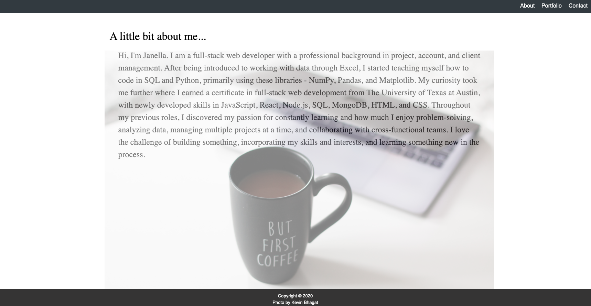

Hi, I'm Janella. I am a full-stack web developer with a professional background in project, account, and client management. After being introduced to working with data through Excel, I started teaching myself how to code in SQL and Python via NumPy, Pandas, and Matplotlib. My curiosity took me further where I earned a certificate in full-stack web development from The University of Texas at Austin, with newly developed skills in JavaScript, React, Node.js, SQL, MongoDB, HTML, and CSS. Throughout my previous roles, I discovered my passion for constantly learning and how much I enjoy problem-solving, analyzing data, managing multiple projects at a time, and collaborating with cross-functional teams. I love the challenge of building something, incorporating my skills and interests, and learning something new in the process.
